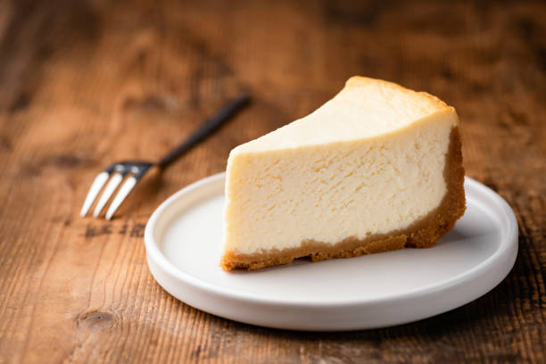

Cheese Cake

It's a wonderful, easy, light cheese filled cake... but not a cheese cake!
Ingredients
- Yellow cake mix
- Ricotta cheese
- White sugar
- Vanilla extract
- Eggs
- Confectioners' sugar
Steps
- Preheat oven to 350 degrees F (175 degrees C). Lightly grease one 9x13 inch pan.
- Make yellow cake mix according to package directions. Pour batter into the greased 9x13 inch pan.
- Mix together the ricotta cheese, sugar, eggs and vanilla extract and spoon over cake batter.
- Bake at 350 degrees F (175 degrees C) for about 45 minutes. Sprinkle cake with confectioners' sugar when cool.